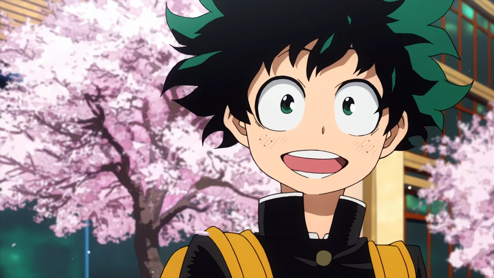
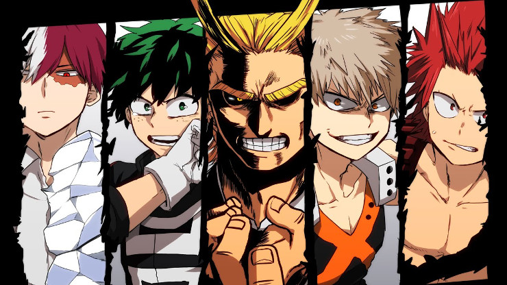

MyHeroAcademia - это жоское рубилово где появился один попуск без причуды (причуда - типо стенда из аниме жожа - духная сила)
кста vот попуск без причуды:
Кто такой герой? Тот, кто готов помочь в трудную минуту. Тот, кем восхищаются, о ком говорят и кого восхваляют. Герой — это не тот, кто ищет славы, а тот, кого она ищет сама. А ещё герой — это тот, кто возвращает надежду отчаявшимся. А надежда, как известно, умирает последней. Всё это относится и к персонажам манги «Моя геройская академия» (Boku no Hero Academia) японского мангаки Кохэя Хорикощи — автора «Сумеречного зоопарка» и «Звёздного завоевателя Балджа». В 2015 году серия была номинирована на ежегодную премию «Манга Тайсё», а американская компания Viz Media почти сразу приобрела права на её распространение, и уже 4 августа 2015 года был выпущен первый том на английском языке. Так началось покорение мира «Моей геройской академией». Ещё до премьеры аниме-экранизации знаменитый Масащи Кищимото — автор «Наруто» — официально передал эстафету «Воли огня» («Хи но Ищи») новому поколению сёнэна, и термин «Хи но Ищи» как нельзя лучше выражает смысл звания «Символ мира».
Главный герой — Мидория Изуку, четырнадцатилетний мальчишка, оканчивающий среднюю школу и уверенный только в одном: он абсолютно нормальный, во всех смыслах этого слова. Тем не менее это не мешает ему мечтать о том, что однажды он станет супергероем. По воле судьбы Мидория попадает в лапы монстра, и спасает его не кто иной, как герой его детства Всемогущий. С этого момента и начинается всё самое интересное… Это история о том, как эпически закручиваются события в жизни Мидории после трагедии: о приобретении причуды (так здесь называют сверхспособности); об обучении в академии для будущих супергероев; о взаимоотношениях с наставником; о проблеме принятия причуды как части себя; о соперничестве и попытках доказать себе и всем вокруг, что он справится с ношей вопреки всему. А ещё в этой истории очень много дружбы, юмора и драмы.Одна из важных особенностей манги «Моя геройская академия» — детализированное изображение персонажей. Немало внимания автор уделяет рисовке и проработке визуальных нюансов уникальных способностей героев. Давным-давно юный Кохэй посмотрел «Человека-паука» Сэма Рэйми и так проникся, что навеки стал поклонником американской супергероики, причём не только в фильмах, но и в комиксах. Мангаку поразило, как умело западные художники орудуют таким мрачным на первый взгляд чёрным цветом, насколько эффектно и драматично воспринимаются сцены с его использованием. И это нашло своё отражение в визуальном исполнении манги «Моя геройская академия». Несмотря на то, что в одном и том же кадре присутствуют персонажи, нарисованные в разных стилях (как реалистичные, так и гротескные), постоянные скачки от реального к нереальному и шикарная эмоциональная рисовка придают манге те особые лёгкость, динамичность и выразительность, которые позволяют ей соревноваться с комиксами за место в сердцах поклонников этого вида искусства. Если смотреть первый сезон аниме после прочтения манги, может возникнуть ощущение затянутости: ожившие сцены сражений, что так увлекают в манге Boku no Hero Academia (благодаря кинематографическим планам, игре с перспективой, динамичности рисунка), слишком поверхностно выглядят в аниме. В интервью представители студии Bones уверяли, что «постараются соответствовать стилистике автора», но результат далёк от нетипичного стиля повествования мангаки, несмотря на то что над аниме трудился дизайнер персонажей Ёщихико Умакощи. Впрочем, сам мангака не жалуется.Стоит упомянуть и непривычное звукоподражание. Автор совместил восточную и западную ономатопеи, но в большинстве случаев западную использует во время схваток, хотя есть и исключения для усиления эффекта.
ЛИВНИ ОТ СЮДА!!!!!!!!!!!!!!!!